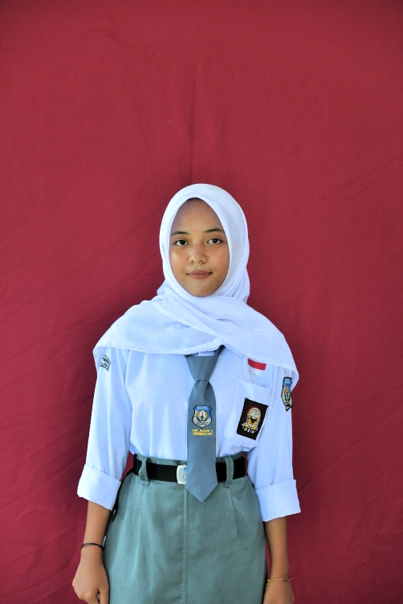

Nama: Azhira Respyanty
Tempat, Tanggal Lahir: Majalengka,12-05-2009
Jenis Kelamin: perempuan
Alamat: rt/rw 005/009,dusun iser,desa Leuwimunding,kec.leuwimunding
Sekolah: smk negeri 1 leuwimunding
Kelas: XI TJKT 1
Jurusan: Teknik Komputer dan Jaringan